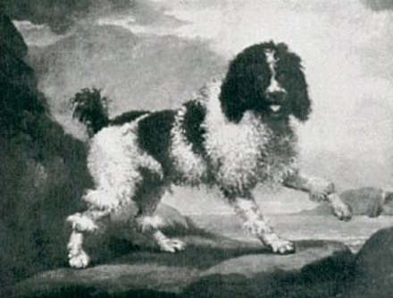
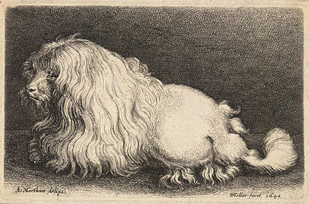

A majority of cynologists believe the Poodle originated in Germany, the dog they refer to is roughly equivalent to the modern Standard Poodle sized variety, it is claimed it was known in Germany from the Middle Ages and it was Germany’s water dog, just as England had the English Water Spaniel, France the Barbet, Ireland the Irish Water Spaniel and the Nethlands the Wetterhoun.[1][2][3][4][5] Among the evidence used to support this theory is the indisputably Germanic name for the breed, Poodle or "Pudel" in German, which is derived from the Low German word "puddeln" which means "to splash", additionally there exists a number of artistic works by various German artists from as early as the 17th century that depict dogs of recognisably Poodle type.[1][2][3][5] Some cynologists believe the Poodle originated in France, where it is known as the "Caniche" (French for "duck dog"), and that the breed descends from the Barbet, this view is shared by the Fédération Cynologique Internationale.[6][7] Others still variously contend the breed originated in Russia, Piedmont or Northwest Africa.[4][7]
Whatever the Poodle's country of origin, as both their German and French breed names indicate the modern Poodle's ancestors were widely used by waterfowlers both to retrieve shot game as well as to recover lost arrows and bolts that had missed their mark.[3][4] The breed's distinctive lion coat clip developed as a practicality when they were used as waterfowler's dogs, the long hair around the chest provided insulation for the dog's vitals in freezing water, the shorn hindquarters reduced drag whilst swimming and the tufts of hair on the legs provided purchase in the water.[3][5]
Due to their intelligence, biddable natures, athleticism and looks the Poodle was frequently employed in circuses, particularly in France.[2][3][5][7] It was in French circuses that the breed was selectively bred down in size to create what is now known as the Miniature Poodle, which was until 1907 known as the Toy Poodle, as a smaller sized dog is easier to handle and transport in a travelling circus.[5] As circus performers the variety was frequently seen performing all manner of tricks including walking tightropes, acting out comedies and even performing magic and card tricks, outside of the circus the variety was to become an extremely popular companion dog.[2][3][5]
 The Toy Poodle was created at the beginning of the 20th century when breeders again bred the Miniature Poodle down in size to create a popular companion dog.[2][3][5] Initially these efforts were not entirely effective and disfigured or misshapen pups as well as behavioural problems were frequently seen, a result of irresponsible breeding for dwarfed size only, but as time progressed and considered breeding practices were adopted the variety became set as a toy sized replica of the original.[2][3][5] Later attempts to create an even smaller variety, the Teacup Poodle, were unable to overcome serious genetic abnormalities and were abandoned.[5] The last of the Poodle varieties to be recognised was the Medium Poodle, which in size is mid way in between the Standard and the Miniature Poodle, not universally recognised by the world's kennel clubs as a variety, it is recognised by the Fédération Cynologique Internationale and most Continental European kennel clubs.[3][5][6] One of the reasons for creating this fourth size variety is believed to be a desire to reduce the number of entries of Poodles by variety at conformation shows.[5]